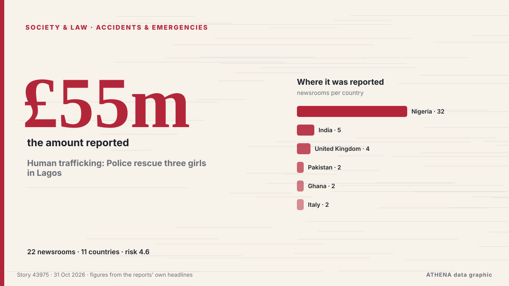

Human trafficking: Police rescue three girls in Lagos

The Lagos State Emergency Management Agency (LASEMA) has confirmed one death and the rescue of three adult males following the collapse of a two-storey building under construction in Fadeyi, Lagos. von Vanguard
Unabhängig gemeldet von 22 Medien in 11 Ländern seit dem 23. Okt., zuerst von Vanguard; die Berichterstattung flaut ab. ATHENA stuft das Risiko als erhöht ein (4.6/10), vor allem wegen der Schwere des beschriebenen Schadens und seiner geografischen und sektoralen Reichweite. Die Konfidenz liegt bei 85 % (hoch): 22 Medien bestätigen es unabhängig, bei einer mittleren Verlässlichkeit der Quellen von 71 %.
Warum es wichtig ist: Rechtliche und politische Änderungen verändern Rechte, Pflichten und öffentliche Leistungen für die Betroffenen.
Was sich geändert hat: 5 neue Berichte von 1 Redaktionen in den 24 Stunden bis 31. Okt..
Erste Schlagzeile: One dead, three rescued in Lagos building collapse
Schlagzeilen werden auf Englisch angezeigt, wie veröffentlicht.
Auf einen Blick
Ausgewählt, bewertet und geschrieben nach der veröffentlichten Methodik von ATHENA. Kein Redakteur greift in einzelne Ereignisse ein. So entsteht ATHENA ›
| 23 Oct 07:25 UTC | 5 |
|---|---|
| 23 Oct 19:25 UTC | 0 |
| 24 Oct 07:25 UTC | 0 |
| 24 Oct 19:25 UTC | 0 |
| 25 Oct 07:25 UTC | 0 |
| 25 Oct 19:25 UTC | 0 |
| 26 Oct 07:25 UTC | 1 |
| 26 Oct 19:25 UTC | 7 |
| 27 Oct 07:25 UTC | 2 |
| 27 Oct 19:25 UTC | 6 |
| 28 Oct 07:25 UTC | 8 |
| 28 Oct 19:25 UTC | 10 |
| 29 Oct 07:25 UTC | 8 |
| 29 Oct 19:25 UTC | 6 |
| 30 Oct 07:25 UTC | 0 |
| 30 Oct 19:25 UTC | 1 |
| 28 Oct 16:42 UTC | 7.8 |
|---|---|
| 28 Oct 23:42 UTC | 6.7 |
| 29 Oct 23:55 UTC | 6.8 |
| 30 Oct 07:46 UTC | 4.5 |
| 31 Oct 00:26 UTC | 4.6 |
Warum diese Zahlen
Bedeutung
Risiko
Konfidenz
Die Berichterstattung – wer berichtete, und wann
Schlagzeile wie veröffentlicht · öffnet das Original- Vanguard · NigeriaOne dead, three rescued in Lagos building collapse
- Channels TV · NigeriaOne Dead, Three Rescued As Building Collapses In Lagos
- Daily Trust · NigeriaLagos: One dead, several feared trapped as building collapses
- Vanguard · NigeriaOne dead, three injured as two-storey building collapses in Lagos
- Punch · NigeriaOne dies, three injured in Lagos building collapse
- NDTV · Indien · IndiaSeveral Workers Trapped In Bengal Coal Mine After Pulley System Glitch
- Punch · NigeriaFire guts residential building in Anambra
- Punch · NigeriaTraders seek Lagos intervention to prevent market fires
- Punch · NigeriaMotorists groan as flood triggers gridlock in Lagos community
- Chronicle Live (Newcastle) · Vereinigtes Königreich · United KingdomBlyth Relief Road update with Government backing for £55m scheme 'off the table'
- Punch · NigeriaMedical outreach reaches over 4,000 Lagos residents
- Express Tribune · PakistanOne worker killed, six injured as under-construction plaza roof collapses in Multan
- The Hindu · Indien · IndiaAll 14 workers trapped at Bengal coal mine rescued
- Graphic Online · GhanaAuthority begins Okada operator registration in November
- Punch · NigeriaPolice confirm three killed, inspector injured in Kebbi violence
- MyJoyOnline · GhanaOne dead, 14 injured in Akuse–Akosombo highway crash
- Punch · NigeriaSAHCO, Air Algérie seal ground handling deal
- Punch · NigeriaLagos to host African Brands Congress on AI
- Punch · NigeriaKebbi violence leaves three dead, residents fleeing communities
- Stuff · Neuseeland · New ZealandPerson found dead in car crashed into water in Marlborough
- Punch · NigeriaLagos driver fleeing police arrest kills okada rider, injures two
- Birmingham Mail · Vereinigtes Königreich · United KingdomDeals struck at collapsed Midland flooring firm saving 147 jobs
- The Hindu · Indien · India26 dogs rescued from suspected meat trade in Assam
- The Herald (Scotland) · Vereinigtes Königreich · United KingdomFormer C&A building on Sauchiehall Street could be turned into 'boutique' hotel
- ANSA English · Italien · ItalyWorker dies in hospital after balcony collapses in Palermo area
- ANSA English · Italien · ItalyWorker dies in hospital after balcony collapses in Palermo area
- Trinidad Express · Trinidad und Tobago · Trinidad and TobagoTwo women shot dead at spa in Couva
- Irish Examiner · Irland · IrelandHosanna in the highest bid: St Vincent's Church sale agreed at €400k
- The Hindu · Indien · IndiaChild rescued in Ranipet; four persons held
- Belfast Telegraph · Vereinigtes Königreich · United KingdomVincent Kompany released from hospital following collapse last week
- Punch · NigeriaLagos tackling 3.3m housing deficit, says Sanwo-Olu
- Punch · NigeriaLASG enlists fathers to prevent child abuse
- Punch · NigeriaLagos court denies wheelchair-bound suspect bail over murder
- Punch · NigeriaResidents groan as blackout hits Lagos communities
- Punch · NigeriaLagos man bags life jail for defiling 11-year-old girl
- Punch · NigeriaKeeping Oyo’s sugar dream alive
- Punch · NigeriaLagos warns motorists against ember months recklessness
- Punch · NigeriaHealth firm offers free screenings at Lagos fitness event
- Dawn · PakistanInquiry holds school owner responsible for roof collapse
- NEWS.am (English) · Armenien · ArmeniaOne of persons trapped under soil due to Yerevan street collapse dies